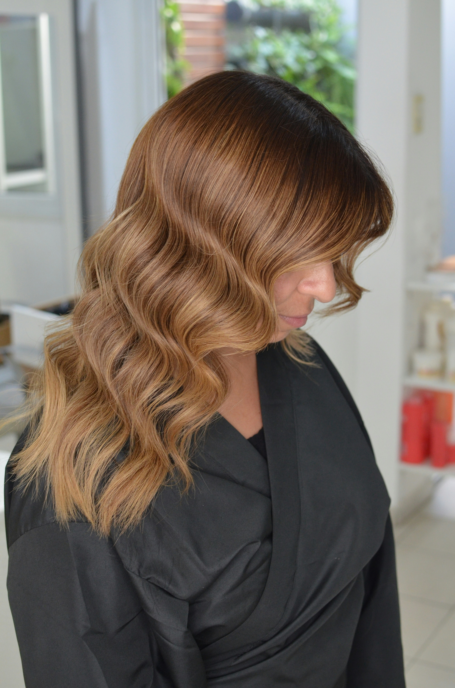

Referencias de brillo, forma y color para quienes buscan un resultado delicado, uniforme y bien definido.
La propuesta combina estética, escucha y una ejecución cuidada para que el resultado se sienta natural, limpio y alineado contigo.
Desde manicure y maquillaje de uñas hasta nail art y mantenimiento, cada paso se trabaja con la intención de que manos y estilo se sientan cuidados sin exceso.


Tintura, matices, retoques y cambios más visibles se abordan desde la conversación previa, el cuidado de la fibra y el resultado final que quieres construir.
Ver resultados y referenciasEn lugar de separar las fotos en una página aparte, aquí reunimos resultados que ayudan a imaginar mejor el tipo de manicure, color, movimiento o styling que puedes conversar antes de reservar.
Referencias de brillo, forma y color para quienes buscan un resultado delicado, uniforme y bien definido.

Ideas de forma, caída y presencia para servicios que buscan ligereza visual y un acabado natural.

Fotografías que ayudan a conversar intensidad, matiz y movimiento antes de tomar decisiones de color.


Si tienes una idea, una referencia o una ocasión especial, podemos ayudarte a convertirla en el servicio más adecuado para ti.
Usa el formulario de citas o escríbenos por WhatsApp para coordinar disponibilidad y detalles.